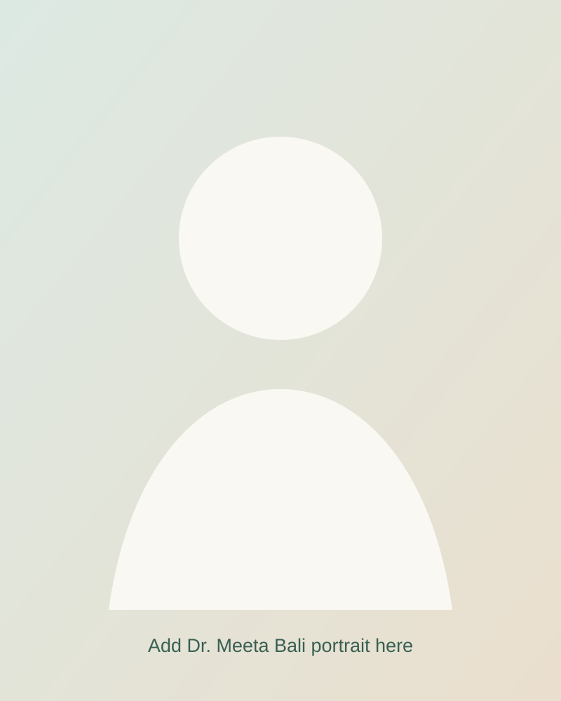

01
Special Education
More than three decades of work in special education, particularly autism, communication, neurodevelopment, individualized intervention and family support.
Explore special education →Dr. Meeta Bali is, first and foremost, a Special Educator. Her wider practice includes Biodynamic Craniosacral Therapy, Family Constellations, Business/Organizational Constellations, Trauma Constellations and breathwork.

More than three decades of work in special education, particularly autism, communication, neurodevelopment, individualized intervention and family support.
Explore special education →A gentle, non-forceful hands-on practice emphasizing therapeutic presence, subtle perception and support for physiological regulation.
Understand the approach →Family, business/organizational and trauma constellation work that explores relational and systemic patterns.
Explore constellation work →Dr. Bali began her career in special education at the B.M. Institute of Mental Health in Ahmedabad and subsequently worked in schools in Mumbai, Gurgaon and Kanpur. She later served as Principal of Samarpan, Centre for Autism Spectrum Disorders, established by SOPAN.
View the full career profile →Her work begins with the whole person—not merely a diagnosis, symptom, behaviour or presenting difficulty.
Special-education consultation, autism and developmental support, HANDLE-informed work and appropriately adapted craniosacral sessions.
Craniosacral, breathwork and constellation sessions for people seeking support around regulation, stress, pain, transitions or relational patterns.
Business and organizational constellation work for founders, teams and family enterprises considering systemic dynamics.